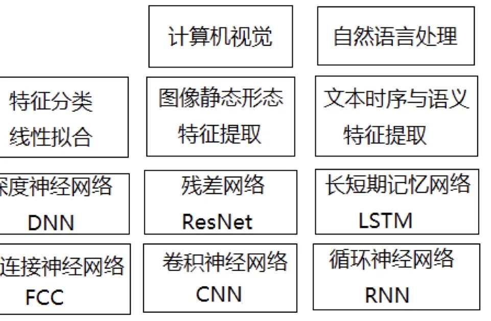
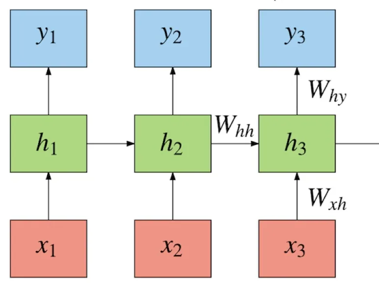
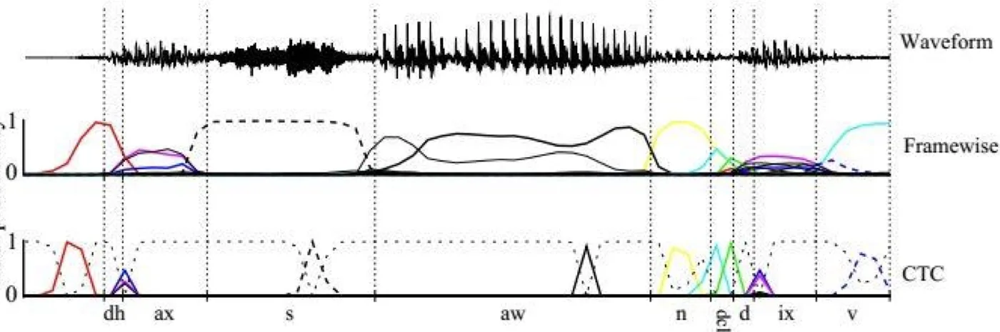
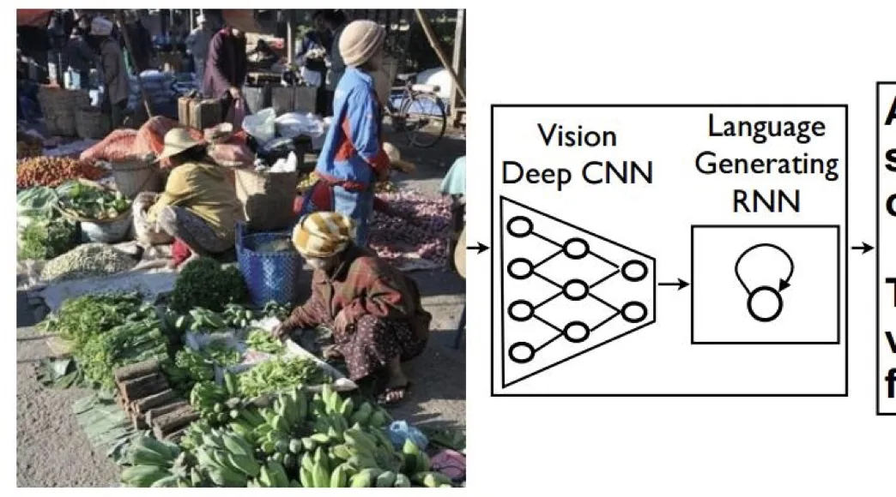
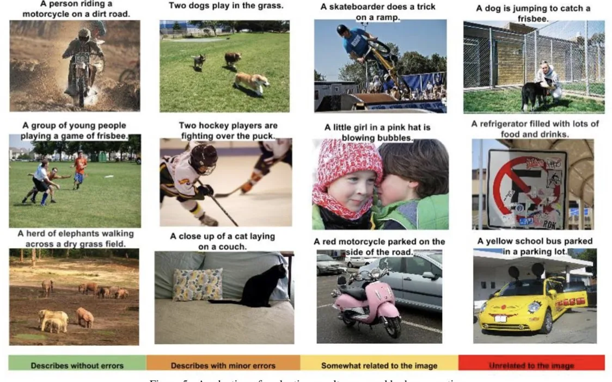
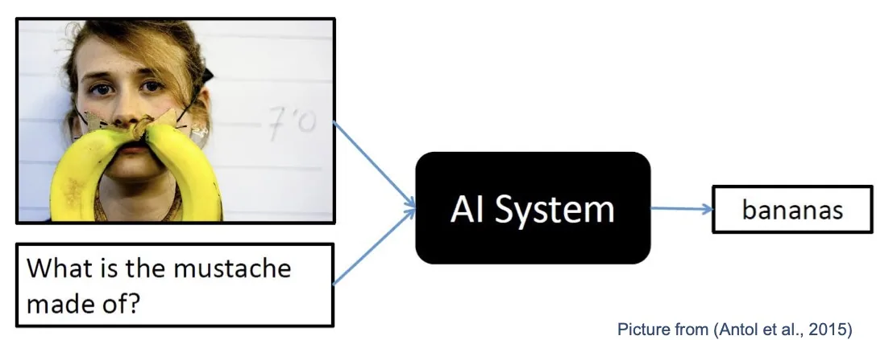
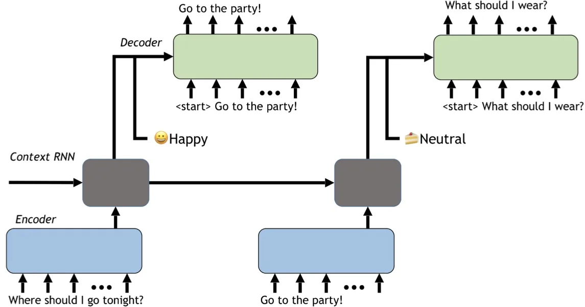

计算机视觉 · 第 7 章 循环神经网络
7.9 循环神经网络的典型应用
原理讲完，该看它能干什么了。课件的总起句很简洁：只要涉及到序列数据的处理问题，都可以使用到循环神经网络。 随后它给出了四个方向——语言建模与文本生成、机器翻译、语音识别、生成图像描述，并逐个配上例子；最后又补充了视觉问答、写字与对话系统。本节按这个顺序走一遍，重点体会每个任务里「序列」体现在哪里。
1. 总览：序列数据处理

图 1 把本章的位置摆得很清楚：卷积神经网络擅长处理「静态形态」，而时序与语义这一块交给循环神经网络。课件列出的四个应用方向是：
- 语言建模和文本生成：给出一个词语序列，预测下一个词语的可能性；
- 机器翻译：将文本内容从一种语言翻译成其他语言；
- 语音识别：基于输入的声波预测语音片段，从而确定词语；
- 生成图像描述：理解图像中发生了什么，从而作出合理的描述。
2. 语言建模：预测下一个词
语言建模是循环神经网络最「本色」的应用：给出一串词，预测下一个词出现的可能性。它的输入是一个词序列，输出是词表上每个词的概率，取概率最大的那个就是预测结果。

这个任务有个讨巧之处：训练数据不需要人工标注。一段现成的文本，把每个位置的下一个词当作标签即可，文本本身就是答案。这也是它能被大规模训练的原因。
课件给了两个好玩的例子。第一个是让 RNN「学习」汪峰的全部作品之后自动生成歌词（代码见 https://github.com/phunterlau/wangfeng-rnn），生成的句子像这样：
我在这里中的夜里
就像一场是一种生命的意叶
就像我的生活变得在我一样
可我们这是一个知道这些句子从语法上看并不通顺，但词的搭配、句子的长度和节奏都带上了几分原作的味道。这恰好说明模型学到的是词与词之间的统计关联，而不是语法规则。
第二个例子是作诗（生成结果见 https://janvia.github.io/2019/01/13/循环神经网络RNN-写诗/）。课件给出了生成的诗句与英文翻译，例如「白鹭窥鱼立，青山照水开」对应 “Egrets stood, peeping fishes. Water was still, reflecting mountains.”——同样是「像那么回事」的生成结果。
3. 机器翻译
机器翻译在 7.3 节已经讲过做法：输入为源语言的单词序列，输出为目标语言的单词序列，两者不等长、也没有严格对应关系，因此用「编码器—解码器」结构实现。这里只把它列入应用清单：它是异步的序列到序列模式最典型的落地场景。
4. 语音识别
语音识别的设定很简单：输入为语音序列，输出为识别出来的文字序列。难的地方在于两者的粒度对不上——音频是按帧处理的，一秒钟可能有上百帧，而文字是以词（或字）为单位的，中间并没有「第几帧对应哪个字」的现成标注。

图 3 里的 CTC（Connectionist Temporal Classification，连接时序分类）就是为解决这个对齐问题而设的：它允许网络在帧一级输出，再通过一套合并规则把重复帧与空白帧折叠成最终的文字序列。这样就不必为每一帧人工标注答案。
5. 生成图像描述：看图说话
这个任务把两章的内容接在了一起：理解图像中发生了什么，从而作出合理的描述。做法是先用卷积神经网络「看」——把图像编码成一个特征向量，再用循环神经网络「说」——逐词生成描述句子。

课件还给出了这个任务的评价结果（图 5），按人工评分把生成结果分成四档：Describes without errors（描述无误）、Describes with minor errors（有轻微错误）、Somewhat related to the image（与图像有些关系）、Unrelated to the image（与图像无关）。例句如 “A person riding a motorcycle on a dirt road.”、“Two dogs play in the grass.”——可以看出，评价的关键在于句子是否准确且具体地描述了画面内容，而不只是语法通顺。

6. 视觉问答 VQA
比「看图说话」更进一步的是视觉问答（Visual Question Answering，VQA）。课件的定义是：给定一幅图像以及一个关于该图像的自然语言问题，任务是给出准确的自然语言答案。

与「看图说话」相比，VQA 的输入多了一条：问题。图像与问题分别编码后一起送入模型，输出则是一个简短的答案。它要求模型把「看到的东西」与「被问到的东西」对应起来，因此是图像描述任务的进阶版本。
7. 写字
「写字」这个例子最能说明「把任务化成序列」的思路。课件的描述是：把一个字母的书写轨迹看作是一连串的点。一个字母的「写法」其实是每一个点相对于前一个点的偏移量，记为 (offset x, offset y)；再增加一维取值为 0 或 1 来记录是否应该「提笔」。
这样一来，写字就变成了一个序列生成问题：网络每步输出一组偏移量与一个提笔标志，把它们依次连起来，轨迹就画出来了。提笔标志的作用是让笔在字母的笔画之间「抬起来」，否则所有笔画会被连成一团。这个例子也说明循环神经网络不只能处理「读进来」的序列，同样能「写出去」。
8. 对话系统
最后一个例子是对话系统。多轮对话本身就是一条序列：用户这句话的意思，往往取决于前面聊过什么。

课件给出的例子是：问句 “Where should I go tonight？” 得到回复 “Go to the party！”。值得注意的是图中标出的 Happy、Neutral 等情感标签——除了「说什么」，系统还要决定「用什么样的语气说」，因此上下文状态里既要有对话内容，也要有情绪这类附加信息。
本节小结
- 总原则：只要涉及序列数据的处理，都可以用循环神经网络。课件给出的四个方向是语言建模与文本生成、机器翻译、语音识别、生成图像描述。
- 语言建模就是「给出一个词语序列，预测下一个词」：输入词经嵌入变成向量，经隐状态算出词表上的概率分布；训练不需要人工标注，文本本身就是标签。课件举了自动生成汪峰风格歌词与自动作诗两个例子。
- 语音识别的输入是语音序列、输出是文字序列，由于帧与字没有现成对齐关系，通常借助 CTC（连接时序分类）完成对齐。
- 生成图像描述（看图说话）把 CNN 与 RNN 接起来：CNN 负责编码图像，RNN 负责逐词生成描述；评价按「描述无误、有轻微错误、与图像有些关系、与图像无关」分档。
- 视觉问答（VQA）在图像之外再输入一个自然语言问题，要求给出准确的答案；写字把书写轨迹表示成偏移量与提笔标志，把生成问题变成序列问题；对话系统用编码器、上下文 RNN 与解码器维护多轮对话并生成回复，还能带上情感标签。